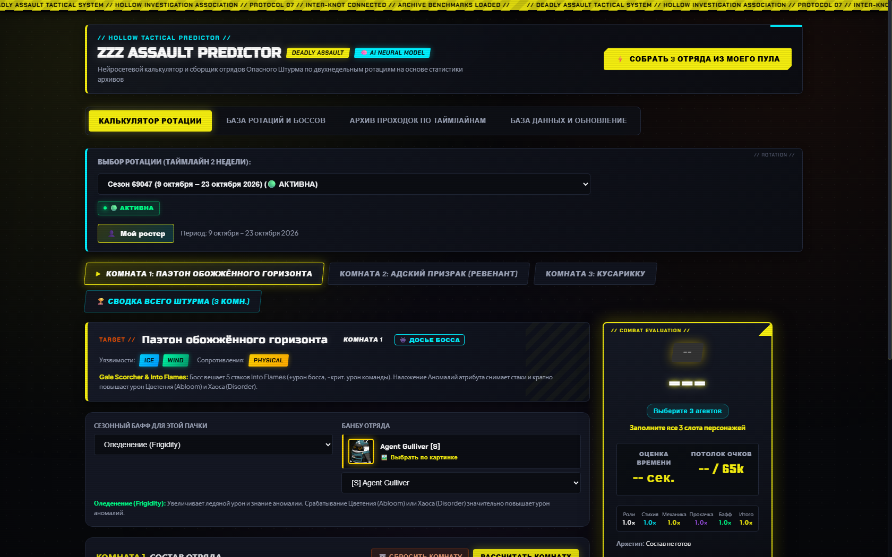
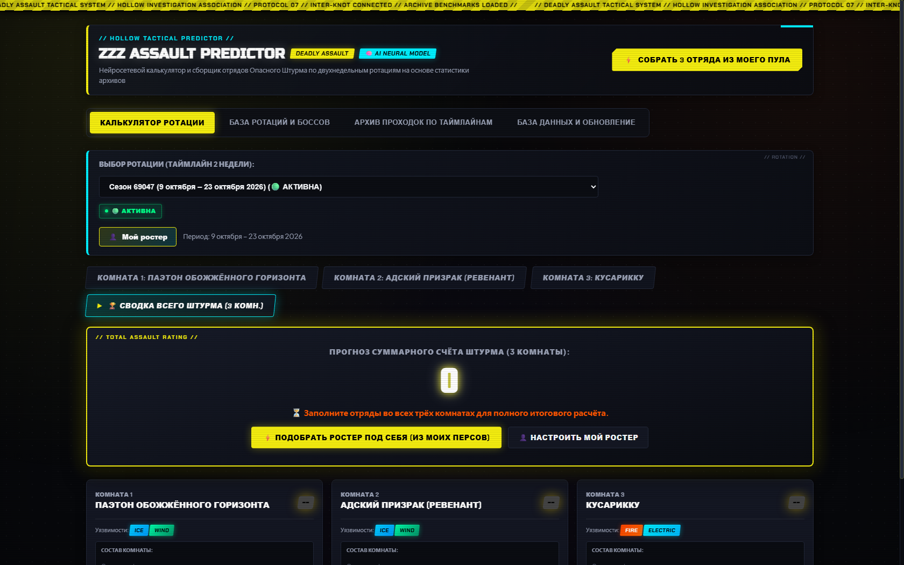
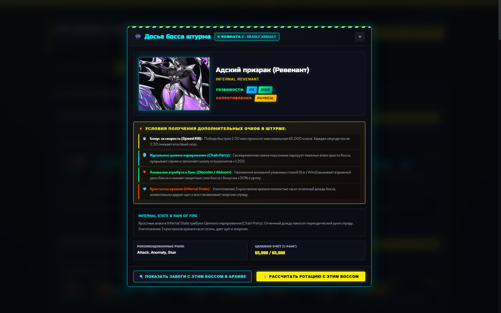
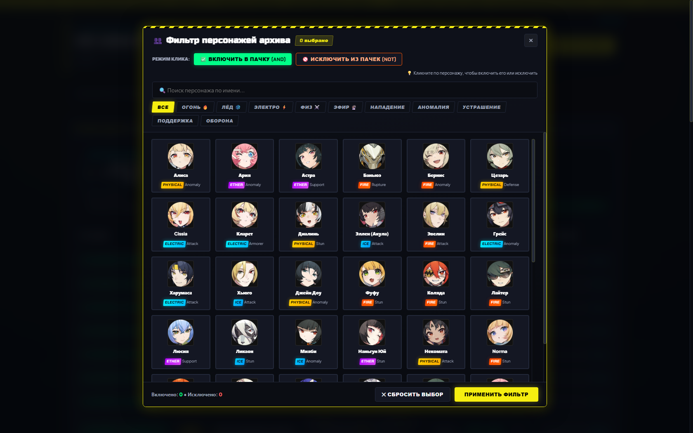

Как приручить хаос, турнирную математику и ураганный экшен с помощью нейросетей.
Простой и наглядный гид для тех, кто никогда не играл в Zenless Zone Zero, но ценит красивый интерфейс, умные алгоритмы и победу точного расчёта над случайностью.
Краткий гид для тех, кто никогда не играл в Zenless Zone Zero и не знаком с гача-играми
«Опасный Штурм» — самый жестокий турнирный режим, где цена неверного решения слишком высока
Калькулятор отряда: точный прогноз счёта, коридор ошибок и радар синергий

Пьедестал на 195 000 очков и алгоритмический автоподбор отрядов без повторов

Архитектура Deep MLP: многослойное обучение, инференс за 0.1 мс прямо в браузере
Бой в ZZZ — это динамика: анимации комбо, окна оглушения босса и наложение стихийных аномалий. Простая формула в лоб не способна учесть синергию трёх разных персонажей. Нейросеть выучила скрытые зависимости из реальных боев.
Анатомия противников в стиле Nexus Shiyu и визуальный фильтр по 10 000 боев


Продукт инженерного уровня: автономный, мгновенный и проверенный на 100%
node audit-app.js автоматически верифицирует персонажей, оружие и боссов — совпадение 100%.